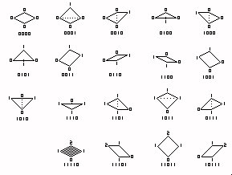

The SV4 file stores the save game information. There is incomplete information about this file format. This page will be updated as information becomes available. The game saves SV4 files with RLE encoding. The decoded files have 2,065,676 bytes (0 .. 1F850B in hexadecimal).
000000..000001 - game time month (divide by 8 for years)
000002..000003 - game time day, counts in steps of 4. when this 16 bit value cycles, a month will have passed.
000004..000007 - game time counter, counts in steps of 1. does not begin at zero when scenario starts
000008..00000B,
00000C..00000F - contain psuedo random numbers which are related to each other.
000010..06000F - contains the game map. See the discussion below. The spatial dimensions used in the game are: one tile has 10 square meters of area; the height marks in the game are 4/3 meters (internal units are 1/3 meters).
060010..060013: an incrementing counter, two upper bits not used - not used as a trigger as far as I can tell
060014.. 198813 - sprite data structures. Each structure has 256 bytes. There are 5,000 sprite structures. Items stored in these structures include peeps (guest and staff) and ride vehicles. Ducks are also stored here. The vomit sprites are also stored here even though they are not moving objects.
198814, 198815: Sprite# of next sprite object to be added.
198816, 198817: Sprite# of first vehicle sprite
198818, 198819: Sprite# of 1st peep sprite
19881A, 19881B: Sprite# of 1st duck/moving text sprite
19881C, 19881D: Sprite# of 1st trash, vomit sprite
19881E, 10881F: Sprite# of 1st oversized ride car?
198820, 198821: Sprite structures available (counts down from 5000)
198822, 198823: Count of vehicles in game
198824, 198825: Count of peeps in game
198826, 198827: Count of ducks/moving text
198828, 198829: Count of trash/vomit
19882A, 19882B: Count of oversized?
19882C..19882F: Offset of park name in name string array - only use the
lower 10 bits (the MSB is set if there is a string entry).
198830..198833: ?
198834..198837 - Cash amount (divide by 10 for dollars etc.)
198838, 19883B - Loan amount (divide by 10 for dollars etc.)
19883C..19883F - bit 0: Park status: 0 = closed, 1 = open; bit 2 set to prohibit land modification; bit 3 set to prohibit removing trees/scenery; bit 4 is set to "show real names"; bit 5 set to prohibit building above tree level; bit 6 set to indicate "low intensity peeps"; bit 7 set to prohibit advertising; bit 8 set for cheat detection?; bit 9 set for "high intensity peeps"(high intensity overrides low intensity); bit 11 = set if no use of money; bit 13 set if admission locked at free; bit 15 is set to prohibit changing "real names" option.
198840..198841: Park entry fee
198842,198843: Park Entry Point #1: X (32 per tile)
198844,198845: Park Entry Point #1: Y (32 per tile)
198846,198847: Park Entry Point #1: Z (16 per tile height)
198848 : park Entry #1: Direction
198849: ?
19884A,19884B: Peep Entry Point #1: X (32 per tile)
19884C,19884D: Peep Entry Point #1: Y (32 per tile)
19884E: Peep Entry Point #1: tile height
19884F: Peep Entry Point #1: Direction (0=East, 1=South, 2=West, 3=North)
198850,198851: Peep Entry Point #2: X (32 per tile) (FFFF if unused ?)
198852,198853: Peep Entry Point #2: Y (32 per tile)
198854: Peep Entry Point #2: tile height
198855 Peep Entry Point #2: Direction (0=East, 1=South, 2=West, 3=North)
198856: ?
198857 - Research rate: 0 = none, 1 = minimum, 2 = normal, 3 = maximum
198858.. 19885B: ?
19885C-198866: Rides Menu
198867..19887B: (reserve area for ride menu)
19887C..198887: Vehicle Menu (similar
to above ride menu - one bit for each vehicle)
198888..19889B: (reserve area for vehicle menu)
19889C..1989FF: Ride feature 1 table
= 89 (decimal) structures of 4 bytes for each ride.
198A00..198A9B: (reserve area for ride feature table 1)
198A9C..198BFF: ride feature table 2 (4 bytes for each ride)
198C00..198C9B: (reserve area for ride feature table 2)
198C9C,198C9D: Number of guests in park
198C9E,198C9F: ?
The following table presents the starting byte of the 4-byte value for the item indicated.Divide numbers by 10 for display values (dollars, etc.)
| This month | 1 month ago | 2 months ago | 3 months ago | 4 months ago | 5 months ago | 6 months ago | 7 months ago | |
| Ride construction | 198CA0 | 198CD8 | 198D10 | 198D48 | 198D80 | 198DB8 | 198DF0 | 198E28 |
| Ride operation | 198CA4 | 198CDC | 198D14 | 198D4C | 198D84 | 198DBC | 198DF4 | 198E2C |
| Land purchase | 198CA8 | 198CE0 | 198D18 | 198D50 | 198D88 | 198DC0 | 198DF8 | 198E30 |
| Landscaping | 198CAC | 198CE4 | 198D1C | 198D54 | 198D8C | 198DC4 | 198DFC | 198E34 |
| Park tickets | 198CB0 | 198CE8 | 198D20 | 198D58 | 198D90 | 198DC8 | 198E00 | 198E38 |
| Ride tickets | 198CB4 | 198CEC | 198D24 | 198D5C | 198D94 | 198DCC | 198E04 | 198E3C |
| Shop sales | 198CB8 | 198CF0 | 198D28 | 198D60 | 198D98 | 198DD0 | 198E08 | 198E40 |
| Shop stock | 198CBC | 198CF4 | 198D2C | 198D64 | 198D9C | 198DD4 | 198E0C | 198E44 |
| Food sales | 198CC0 | 198CF8 | 198D30 | 198D68 | 198DA0 | 198DD8 | 198E10 | 198E48 |
| Food stock | 198CC4 | 198CFC | 198D34 | 198D6C | 198DA4 | 198DDC | 198E14 | 198E4C |
| Staff wages | 198CC8 | 198D00 | 198D38 | 198D70 | 198DA8 | 198DE0 | 198E18 | 198E50 |
| Marketing | 198CCC | 198D04 | 198D3C | 198D74 | 198DAC | 198DE4 | 198E1C | 198E54 |
| Research | 198CD0 | 198D08 | 198D40 | 198D78 | 198DB0 | 198DE8 | 198E20 | 198E58 |
| Loan interest | 198CD4 | 198D0C | 198D44 | 198D7C | 198DB4 | 198DEC | 198E24 | 198E5C |
| 8 months ago | 9 months ago | 10 months ago | 11 months ago | 12 months ago | 13 months ago | 14 months ago | 15 months ago | |
| Ride construction | 198E60 | 198E98 | 198ED0 | 198F08 | 198F40 | 198F78 | 198FB0 | 198FE8 |
| Ride operation | 198E64 | 198E9C | 198ED4 | 198F0C | 198F44 | 198F7C | 198FB4 | 198FEC |
| Land purchase | 198E68 | 198EA0 | 198ED8 | 198F10 | 198F48 | 198F80 | 198FB8 | 198FF0 |
| Landscaping | 198E6C | 198EA4 | 198EDC | 198F14 | 198F4C | 198F84 | 198FBC | 198FF4 |
| Park tickets | 198E70 | 198EA8 | 198EE0 | 198F18 | 198F50 | 198F88 | 198FC0 | 198FF8 |
| Ride tickets | 198E74 | 198EAC | 198EE4 | 198F1C | 198F54 | 198F8C | 198FC4 | 198FFC |
| Shop sales | 198E78 | 198EB0 | 198EE8 | 198F20 | 198F58 | 198F90 | 198FC8 | 199000 |
| Shop stock | 198E7C | 198EB4 | 198EEC | 198F24 | 198F5C | 198F94 | 198FCC | 199004 |
| Food sales | 198E80 | 198EB8 | 198EF0 | 198F28 | 198F60 | 198F98 | 198FD0 | 1990008 |
| Food stock | 198E84 | 198EBC | 198EF4 | 198F2C | 198F64 | 198F9C | 198FD4 | 19900C |
| Staff wages | 198E88 | 198EC0 | 198EF8 | 198F30 | 198F68 | 198FA0 | 198FD8 | 199010 |
| Marketing | 198E8C | 198EC4 | 198EFC | 198F34 | 198F6C | 198FA4 | 198FDC | 199014 |
| Research | 198E90 | 198EC8 | 198F00 | 198F38 | 198F70 | 198FA8 | 198FE0 | 199018 |
| Loan interest | 198E94 | 198ECC | 198F04 | 198F3C | 198F74 | 198FAC | 198FE4 | 19901C |
199020..199023: ?number of guests in park
199024: ?
199025: color for handymen
199026: color for mechanics
199027: color for security guards
199028..1990A7: Scenery Menu
1990A8: banner menu items: bit 0=standard, 1=jungle, 2=roman, 3=egyptian,
4=mining, 5=jurrasic, 6=asian,7=snow
1990A9: banner menu items: bit 0=space, 1..7=unused
1990AA..199107: ?
199108,199109: current park rating
19910A..199129: historical park rating (multiply value by 4 to get approximate actual value). An FF indicates 'not used'
19912A..199149: historical number of guests (multiply value by 10 to get approximate actual value). An 'FF' indicates 'not used'. Note that RCT internally limits this value to 250. (aka, 2500 guests max in the graph)
19914A: Research selection: bit 0=Rollercoasters, bit 1 = Thrill rides, bit 2 = Gentle rides, bit 3 = Shops/stalls, bit 4 = Theming, bit 5 = Ride improvements
19914B: research progress description: 0=initial research, 1=designing,
2=completing
19914C: last development - research item
19914D: last development - corresponding ride
19914E: last development - research category
19914F: last development - flag
199150..199537 : Research items. up to 200 entries
of 5 bytes each. Not used in LL (goto 199C9C for LL)
199538: next development - research item
199539: next development - corresponding ride
19953A: next development - research category
19953B: next development - flag
19953C..19953D: ?
19953E..199541: ?
199542,199543: Cheat detection: count of owned land
199544..199545: ?
199546..199547: ?
199548..19954B: Max loan amount (divide by 10 to get dollars, etc)
19954C..19954D: "cash in pocket" base value for newly generated
guests. Varies from -$10, base, +$10, +$20. A zero value defaults to $50.
19954E: avg hunger of newly generated guests.
19954F: avg thirst of newly generated guests.
199550 : scenario goal: 1 = #peeps (& park rating), 2 = park
value, 3 = have fun!, 4 = competition, 5 = ten
different coasters with excitement at least 6.00, 6 = maintain park
rating & #peeps, 7 = monthly ride income, 8 = ten different
coasters with excitement at least 7.00 and minimum length as specified,
9 = complete five coasters with minimum excitement as specified
199551: number of years to reach goal (10 for competitions)
199552,199553: ?
199554..199557: money (park value/ride income) goal / coaster excitement goal
(only for goal type 9)
199558, 199559: #peeps goal / minimum coaster length (meters)
19955A ..19956D: Advertising, 1 byte for each type, lower 4 bits indicate weeks remaining.
19956E..199573: 1 Byte for each type of advertising, indicates the ride/food associated with the advertising that displays it.
199574..199583: ?
199584..199783: 128 DWords (previous cash balance)
199784..199787: Recent change in cash
199788..19978B: Weekly profit
19978C..19978F: Sum of previous weekly profit
199790..199791: Previous weekly profit count (divide sum by this(if not 0) to get average previous weekly profit?)
199792..199793: ?
199794..199993: 128 DWords: Weekly Profit over time
199994..199997: Park value
199998..199B97: 128 DWords: Park Value over time
199B98..199B9B: scenario objective value at completion Note: MSB set to
indicated objective not met; if bit 0 set - failed objective
199B9C..199B9F: number of admissions
199BA0..199BA3: income from admissions
199BA4..199BA7: Company Value [cash + park value - loan]
199BA8..199BB7: ?
199BB8..199BC7: park awards - four structures of 4 bytes each. Each structure
consists of two words. The first word is a flag to indicate if there is an
award(zero=no, nonzero = yes); the second word indicates the award/string as
follows: 0=most untidy, 1=tidiest, 2=best rollercoasters, 3=best value, 4=most
beautiful, 5=Worst value, 6=safest, 7=best staff, 8=best food, 9=worst food,
A=best bathrooms, B=most disappointing, C=best water rides
199BC8..199BC9: Price for purchasing land (div by 10 for dollars)
199BCA..199BCB: Price for buying Construction Rights (div by 10 for dollars)
199BCC..199BCD: ?
199BCE..199BCF: ?
199BD0..199BD3: contains 58 BB C3 00 if error detected????
199BD4..199C13: user name (null terminated string)
199C14..199C17: Version number of game - convert to decimal: first digit is
major version number; next two digits are minor version number; last three
digits are revision number.
199C18..199C1B: company value at scenario completion
199C1C..199C1F: 1st financial checksum [ 70093A minus cash, ror 5, minus loan, ror 7, add maxloan, ror 3 ]
199C20..199C21: number of ride structures used
199C22..199C23: negative of number of rides available (for cheat detection)
199C24..199C25: max number of tiles(land) allowed to own (for cheat detection)
199C26..199C27: negative of max number of tiles allowed to own
199C28..199C2B: 3rd financial checksum: [cash - loan - all
values in monthly expense/income table.]
199C2C..199C2F: Scenario Slot Number Checksum
199C30..199C4F: Name of winner; if not won or unknown, the character '?' is
used
199C50..199C53: 2nd financial checksum [ cash ror thirteen, xor 0F4EC9621
]
199C54..199C7B: (copyright notice in SC4 files)
199C7C,D: 0 in SV4 files, FED3 in SC4 files (for cheat detection)
199C7E,F: 0 in SV4 files, F318 in SC4 files (for cheat detection)
199C80,1: 0 in SV4 files, B218 in SC4 files (for cheat detection)
199C82,3: 0 in SV4 files, 458A in SC4 files (for cheat detection)
199C84..199C85: ?
199C86..199C87: ?
The following four words are not used (contain zero) in original RCT files.
They specify the size of the map in expansion pack files.
199C88..199C89: meaning unknown, 32*(park_size - 1)
199C8A..199C8B: meaning unknown, value in 199C88 plus 011E
199C8C..199C8D: park size (visible tiles per edge +2)
199C8E..199C8F: meaning unknown, value in 199C88 minus 1 (except full size park
in which case the value is 0FFF)
199C90..199C93: "same price" flags:
| 0 | 1 | 2 | 3 | 4 | 5 | 6 | 7 | |
| 199C90 | balloons | cuddly toy | map | on-ride photo | umbrella | drinks | burgers | fries |
| 199C91 | ice cream | cotton candy | pizza | popcorn | ||||
| 199C92 | hot dogs | seafood | hats | candy apple | t-shirt | doughnut | coffee | |
| 199C93 | chicken | lemonade | bathroom |
199C94..199C95: ?
199C96..199C98: ?
199C99: Water color (0=normal, 1=red)
199C9A..199C9B: ?
199C9C..19A01F: Research items in LL only
19A020..19B57B: ?
19B57C..19B89B: banner info. 100 sets of 8 byte structures(byte 0: 0=standard, 1=jungle(wooden), 2=classical, 3=egyptian, 4=mining, 5=prehistoric(bone), 6=asian, 7=snowy, 8=space,FF= unused; byte1: 0=normal, 1=no entry; bytes 2,3: string index; byte 4: color; byte 5: text color; bytes 6,7: ?)
19B89C..1A389B: 1024 Null terminated Name strings for park, rides, peeps, etc. Each string is allocated 32 bytes. Names are entered starting at the last location (1A387C) and new names are entered in preceeding slots as the user creates them.
1A389C..1A389F: a game time counter - used to trigger various events
1A38A0..1C963F: Ride structure. 255 structures of 608 bytes each
1C9640, 1C9641 - a game time counter - not used as a trigger for any events as far as I can tell
1C9642,3: Horizontal view position (0000 to 1FFF, negated depending on
Viewing angle)
1C9644,5: Vertical view position (0000 to 1FFF, negated depending on Viewing
angle)
1C9646: Viewing Zoom factor (0 = closest, 1 = medium, 2 = far)
1C9647: Viewing angle (0 = from NE, 1 = from NW, 2 = from SW, 3 = from SE)
[note: horizontal and vertical view position will be positive or negative
depending on the view angle as indicated below:
| angle | Horiz | Vert |
0 |
- |
+ |
1 |
- |
- |
2 |
+ |
- |
3 |
+ |
+ |
1C9648..1CADB7: Animation object locations (includes Park/Ride entry banners, fountains, ride pieces, etc.) one thousand - six byte structures: first byte=height, second byte=object code, 3rd & 4th bytes = X (32 per tile), 5th & 6th bytes = Y(32 per tile). The object code is: 00=ride entrance, 02=scenery(eg fountain), 03=park entry, 04=waterfall, 05=rapids, 06=on ride photo, 07=whirlpool, 08=spinning tunnel, 09=ghost train cars, 0A=banner
1CADB8..1CADBB: number of animation objects (Park/Ride entry, queue &
banner, fountains, etc) points
1CADBC..1CADC7: ?
1CADC8..1CADC9: progression of scrolling text (start point of scrolling text)
1CADCA..1CADCD: ?
1CADCE,1CADCF: ?
1CADD0..1CAE43: ?
1CAE44..1F06A3: Data Logging - 8 structures of
19,212 bytes each (graphic charts for G's, etc on rides)
1F06A4..1F06A7: next guest number
1F06A8..1F06A9: another game counter, two upper bits always zero
1F06AA..1F431D: Patrol areas
1F431E: ? - has the value 01
1F431F: ? - has the value 01
1F4320: ? - has the value 01
1F4321: ? - has the value 01
1F4322..1F4329: ?
1F432A: climate (0=wet, 1=normal, 2=dry, 3=cold)
1F432B: ? - usu has the value 05 but a few scenarios have the value 0B
1F432C..1F432D: weather timer - count down from 1920
1F432E : current weather (0=sunny, 1=partly cloudy, 2=cloudy, 3=showers,
4=rain, 5=thunderstorm, 6=snow)
1F432F: target weather
1F4330: current temperature (positive only)
1F4331: target temperature
1F4332: lightning/thunder, 0=none, 1=occasional, 2=frequent
1F4333: target lightning/thunder
1F4334: shade, 0=none, 1=some, 2=dark
1F4335: target shade
1F4336: rain, 0=none, 1=light, 2=heavy
1F4337: target rain
1F4338..1F8313: Message area. 61 messages. Each message structure uses 268
bytes. Current message at 1F4338, then put into last spot (1F8208) and others
are moved up.
The first thirteen bytes of each structure are flags.
byte 0: Icon (00=[hide message], 01=ride, 02=peep walking, 03=peep walking,
04=Money (coins), 05=blank, 06=Scenery, 07=CrowdofPeeps, 08=Award, 09=Graph)
byte 02,03: associated item (ie ride index, peep thought, peep index)
byte 06: how many letters have been displayed
byte 08: month (div by 8 for year)
byte 0A: date: day of month
byte 0C: color (90=white, 91=red, 92=green, 93=gold, 94=brown, 95=grey,
96=blue, 97=purple, 98=beige, 99=pink, 9A=aqua, 9B=tan, 9C=green)
byte 0D: null terminated string starts here. (byte value 05 is used to indicate a new line.)
1F8314..1F8351: Scenario name (not park name)
1F8352,3: Scenario slot number
1F8354..1F8357: scenario flags (expansion packs only) bit 12: error while loading
1F8358..1F8507: ?
1F8508..1F850B - these last four bytes of the file contain an additional checksum in CF/AA and LL saved games. This is in addition to the checksum added after the file is RLE encoded. This was not present in the original RCT files. This checksum is calculated by starting with the hex value 00000031 in the summation register. The summation register is rotated left 13 bits and then the byte of [unencoded] data structure is added to the low byte. This is done for the data from 000000 to 1F8507.
The game has a grid of 126 by 126 tiles. The save file contains 128 by 128 tiles. The tiles around the perimeter of the game "board" are not displayed but are apparently needed to display the rock edges around the "board". The save file contains (among other things) a sequence of map elements. A map element data structure is used for all stationary items which appear on tiles. The sequence is: rows of columns; where each column contains a variable number of map elements (at least one). Each map element has 8 bytes identified below as bytes 0 through 7. The map element data structure begins at address 000010. The first row consists of perimeter tiles so there is only one map element per tile. The second row consequently begins at 000410. The length of the second and subsequent rows depends on how many map elements are at each tile. I have used the arbitrary designation that the map begins at the SouthWest corner and the first row goes from West to East.
byte 0 - map element type identifier -
upper two bits: indicate quadrant for smaller objects and are
used as the two highest bits for the color code on geometric objects. NOTE: all
geometric edge (wall) objects on a tile will have the same color; a geometric
scenery object can have a different color from the geometric edge objects. Also
used to indicate direction a queue entry faces. SURFACE tiles - the upper bit
is a flag to use extended edge types, see the description under "byte
4". TRACK pieces: the most significant bit is set to indicate lift chain.
00 = entire tile or SW quadrant -or- facing West
01 = NW quadrant -or- facing North
10 = NE quadrant -or- facing East
11 = SE quadrant.-or- facing South
middle four bits: indicate type of element
0000 = surface tile
0001 = path (& road)
0010 = track element or shop/stall
0011 = scenery item (single tile)
0100 = ride entry/exit, Park entrance
0101 = fence(s)/wall(s)
0110 = scenery item (multiple tile)
0111 = banners
lower two bits:
| bit values | direction scenery/track item faces | queue color | path qualifier |
00 |
West |
blue |
grey tarmac/dirt/crazy tile/tile |
01 |
North |
red |
red tarmac/grey tile/black dirt |
10 |
East |
yellow |
brown tarmac/red tile |
11 |
South |
green |
green tarmac/green tile |
In Loopy Landscapes, bit 0 of surface tiles is used to extend the surface type - see the description under "byte 5"
byte 1 - The most significant bit is set to indicate the 'last' map element at this tile position. A single -or- a sequence of 8-byte map elements will be present for each tile position. The four bits of the lower nibble are used to indicate which quadrant(s) are used. bit 3 = NW, bit 2 = SW, bit 1 = SE, bit 0 = NE. The middle two bits of the upper nibble are used to indicate the support type for paths: X00X= normal (truss), X01X= wood post, X10X= steel post, X11X= bamboo post. bit 6 is set for "indestructible" track elements (used in certain scenarios).
byte 2 - base height of this element. Surface elements have heights which are multiples of 4. An element (eg. a large tree) which is located at the center of a sloped tile would have a base height which is 2 greater than the base height of the sloped surface element. A small tree on a slope would have a base height either 1 or 3 greater than the surface element depending on which quadrant it is in.
byte 3 - clearance (construction) height for this map element. {A value of zero is used for perimeter tiles.} The vertical space between the values in byte 2 and byte 3 is occupied by this element. No other space filling map element is allowed to occupy this range.
byte: |
4 |
5 |
6 |
7 |
| surface | slope | terrain/water | grass | ownership |
| scenery (single tile) | item | age | color | |
| scenery (multiple tile) | item | index | color | color |
| Tracks | element | index | color | ride index |
| path | type | additions | edges/corners | addition status |
| entry/exit | item | rides = 0; park=index | rides=0; park=path | ride index |
| fence/wall | slope | item | item | item |
| banner | index into banner structures | position | FF(FD=one way) | 0 |
byte 4 - for multiple-tile scenery elements: byte 5 contains
the sequence number for the part of the scenery object to be rendered at this
tile. The number of tiles occupied are in brackets.
00 = Roman colosseum [12]
01 = house [6]
02 = Sphinx [8]
03 = house [8]
04 = Colonnade [4]
05 = Mine Hut #1 [4]
06 = Mine Hut #2 [4]
07 = Volcanoe [12]
08 = Pyramid [36] Note: the pyramid is "hollow" inside
09 = Mine Shaft [6]
0A = Martian Building [4]
0B = Skeleton [2]
0C = Dinosaur #1 [2]
0D = Dinosaur #2 [2]
0E = Dinosaur #3 [2]
the following are in Loopy landscapes:
0F = ice palace [4]
10 = castle tower square brown [1]
11 = castle tower tall brown [1]
12 = castle tower square grey [1]
13 = castle tower tall grey [1]
14 = tent [1]
15 = medieval house 1 [1]
16 = medieval house 2 [1]
17 = medieval house 3 [1]
18 = giant pumpkin [4]
19 = space rocket [4]
1A = town hall [4]
1B = urban house 1 [4]
1C = gas station [4]
1D = pagoda [4]
1E = office block [4]
1F = urban house 2 [4]
20 = satellite [4]
21 = space capsule [1]
22 = tenement [1]
byte 4 - for single-tile scenery elements
byte 4 - tracks: the track element code number. {includes: shops, info kiosk and ride bases}Track pieces which occupy more than one tile use byte 5 to indicate which section of the track element is located at this tile.
byte 4 - park/ride entry/exit: for park entrance, byte 5
indicates which section. Otherwise, the remaining bytes are 00's.
00 = Ride entrance
01 = Ride exit
02 = Park entrance
byte 4 - paths - upper nibble:
00 = queue
01 = tarmac
02 = dirt
03 = crazy tile
04 = roads (not available to user)
05 = tile
byte 4 - paths - lower nibble: bit 3 is set for a queue
entry, bits 2, 1, 0 indicate the slope:
0 = flat
4 = up to West
5 = up to North
6 = up to East
7 = up to South
byte 4 - fences/walls: the upper three bits are the three
lower bits of the color of geometric objects.
byte 4 - surface tiles - upper 3 bits: the edge style of surface
elements. 000 = rock, 001 = brick, 010 = iron, 011 = wood, 100 = grey wall, 101
= yellow wall, 110 = black wall, 111 = red wall. In Loopy Landscapes, the MSB
of byte 0 indicates an extended set of edge styles. If that bit is set on a
surface element, use the following: 000 = Ice, 001 = purple wall, 010 = green
wall, 011 = brown stone wall, 100 = grey stone wall, 101 = skyscraper A, 110 =
skyscraper B, 111 = not used.
byte 4 - fences/wall - lower 5 bits: the slope of the surface. Thes same value as below.
byte 4 - banners: index into banner data structure (100 eight byte structures beginning at 19B57C)
byte 4 - surface tiles - lower 5 bits: the slope of surface elements. There are 19 possible tile slopes. (The stored tile height is the lowest point of a surface tile.) The lower four bits correspond to corners of the tile. If the bit is set, that corner is elevated by one unit. The case of all four bits being set is not used. If the fifth bit is set, three of the four lower bits will be set; and the corner opposite of the zero bit is elevated by two units rather than one. The image below shows the slopes as viewed from the SouthWest corner.

byte 5 - surface tiles - upper 3 bits: the terrain type for surface elements. 000 = grass, 001 = sand, 010 = dirt, 011 = rock, 100 = martian, 101 = checkerboard, 110 = dirt/grass clumps, 111 = roofing tiles. In Loopy Landscapes, the LSB of byte 0 is also used as a bit for terrain type. If that bit is set, the bits of byte 5 correspond to: 000 = Snow/Ice, 001= log roof, 010 = iron roof, 011 = grey roofing tile, 100 = red grid, 101 = yellow grid, 110 = purple grid, 111 = green grid
byte 5 - surface tiles - lower 5 bits: absolute height of water, if present.NOT the height of water above ground. The maximum allowed value in the game is 28. This value is to be multiplied by four.
byte 5 - banners - lower 2 bits: position of the banner posts (it faces toward the opposite direction). 0 = West, 1 = North, 2 = East, 3 = South.
byte 5 - paths: additions to path edge. All available edges
will contain a copy of the item.
0 = nothing
1 = single lamps
2 = triple lamps
3 = litter bins
4 = benches
5 = jumping fountains
6 = egyptian lamps
7 = martian lamps
8 = vandalized single lamps
9 = vandalized triple lamps
A = vandalized liter bins
B = vandalized benches
C = vandalized egyptian lamps
D = vandalized martian lamps
E = jumping snowballs
byte 5 - fences/walls: four sets of the upper two bits of the edge element code for each side of the tile (I know... this is confusing) The table below maps the bits of this byte to the edge element codes for each side. For example, bit 3 maps to bit 5 of the North element code. The remaining bits of each edge element code are in bytes 6 & 7.
bit 7 |
bit 6 |
bit 5 |
bit 4 |
bit 3 |
bit 2 |
bit 1 |
bit 0 |
S5 |
S4 |
E5 |
E4 |
N5 |
N4 |
W5 |
W4 |
The descriptions of the edge elements are listed here. Every edge element has a clearance height of 4.
00 = mesh fence
01 = hedge
02 = white railing
03 = wood panel fence
04 = barb wire fence
05 = railing
06 = brick wall
07 = stone wall
08 = conifer hedge
09 = roman column wall
0A = castle tall with window brown
0B = castle tall with gate grey
0C = creepy gate
0D =
0E =
0F = no element at this edge
10 = mesh fence with gate (not available to user)
11 = hedge with gate (not available to user)
12 = white railing with gate (not available to user)
13 = wood panel fence with gate (not available to user)
14 = barb wire fence with gate (not available to user)
15 = iron railing with gate (not available to user)
16 = brick wall with gate (not available to user)
17 = stone wall with gate (not available to user)
18 = conifer hedge with gate (not available to user)
19 = castle wall tall brown
1A = castle wall medium brown
1B = castel wall tall with window grey
1C = barb fence with snow
1D =
1E =
1F = no element at this edge
20 = roman wall
21 = blue playing cards
22 = martian wall
23 = wood post fence
24 = primitive wood fence - tall
25 = leaded glass
26 = white wood panel fence
27 = wooden fence
28 = castle wall short brown
29 = castle wall tall with cross brown
2A = castle wall tall grey
2B = castle wall medium grey
2C = wooden fence with snow
2D =
2E =
2F = no element at this edge
30 = egyptian wall
31 = red playing card wall
32 = plate glass
33 = red-wood post fence
34 = primitive wood fence - short
35 = bone fence
36 = red-wood panel fence
37 = jungle fence
38 = castle wall short grey
39 = castle wall tall with gate brown
3A = castle wall tall with cross grey
3B = creepy wall
3C = post fence with snow
3D =
3E =
3F = no element at this edge
byte 5 - single tile scenery objects : age (flowers wilt at 28, die at 37)
byte 5 - multitile structures - upper 6 bits: contains a count (index) for which part of the structure is located at this tile.
byte 5 - track elements: contains a count (index) for which part of the structure is located at this tile.
byte 5 - banners: which edge banner is on: 0 = West; 1 = North; 2 = East; 3 = South
byte 6 - surface map elements: this value indicates the amount of grass growing on tiles. Tiles which are outside of the park boundary have the static value 01. Tiles within the park boundary have values which increase with time.(Least Significant 3 bits: 0=mowed, 1,2,3=clear, 4,5,6=clumps, 7=reserved)
byte 6 - scenery objects: this byte contains the color
byte 6 - fences/walls - upper nibble: the lower four bits (N3..N0) of the North edge element code.
byte 6 - fences/walls - lower nibble: the lower four bits (W3..W0) of the West edge element code.
byte 6 - paths - upper nibble: the bits are set if the path extends in that corner: bit 3 for SW, bit 2 for SE, bit 1 NE, and bit 0 for NW. Note: on "road" paths, the center stripe is drawn on the appropriate edge when two (and only two) adjacent corner bits are set.
byte 6 - paths - lower nibble: the bits are set if the path extends in that direction: bit 3 for South, bit 2 for East, bit 1 for North, and bit 0 for West. For example, a path which extends to the South and to the East would have 1100 for these four bits.
byte 6 - track elements: color code
byte 6 - multitile structure: color code
byte 6 - park entry: path code(hex) - 4=grey tarmac, 5=red tarmac, 6=brown tarmac, 7=green tarmac, 8=brown dirt, 9=black dirt, 0C=crazy tile, 14=beige tile, 15=grey tile, 16=red tile, 17=green tile
byte 7 - multitile structure: color code
byte 7 - paths: state of addition(upper two bits=south item, next two bits=east item, next two bits=north item, lowest two bits=west item) trashcans = capacity (0=overflowing, 3=empty)
byte 7 - fences/walls - upper nibble: the lower four bits (S3..S0) of the South edge element code.
byte 7 - fences/walls - lower nibble: the lower four bits (E3..E0) of the East edge element code.
byte 7 - track elements: ride index
byte 7 - surface map elements: upper nibble indicates land
property rights.
0 = unowned
1, 3 or 5 = construction rights purchased
2 = owned
4 = construction rights available
8 = for sale
A = bought
i.e.
bit 0: set if construction rights purchased
bit 1: set if owned/purchased
bit 2: set if construction rights available
bit 3: set if land can be bought
lower nibble: each bit indicates presence of property boundary fence: bit 0 = North fence, bit 1 = East fence, bit 2 = South fence, bit 3 = West fence
There are 180 entries of 5 bytes each:
0 |
1 |
2 |
3 |
4 |
| Research item | corresponding Ride | Research Category | Flag | Research Expenditure Area |
Flag = FF to specify the following limits (Depending on Byte 0):
| Byte_0 | |
FF |
End of Available items. Everything from the beginning to this flag is available to the user. Note: Special track/vehicle items may be listed here even if the corresponding ride is not available. This is the case when the special track/vehicle item is to be made available to the user as soon as the corresponding ride becomes available. For example, in some scenarios you may have "spining cars for steel mini roller coaster" available as soon as the steel mini roller coaster becomes available while in other scenarios you would have to research this item. |
FE |
End of Researchable items. All items which can be researched are located between the FF flag and this flag. As items are researched, they are moved from this section and placed in the above section. |
FD |
End of items. Pairs of entries between the FE and FD flag are randomly swapped in the above research order table. The swapping takes place when the scenario is first loaded. |
Flag = 0 for research item entries.
| Research Category | |
| 0 = Theming | 'Research Item' contains an index for the Theming item |
| 1 = Rides/Shops | 'Research Item' contains an index for the item |
| 2 = Vehicles | 'Research Item' contains an index for the vehicle to go on the ride indexed by 'Corresponding Ride' |
| 3 = Specials | 'Research Item' contains an index for the special track item to go with the ride indexed by 'Corresponding Ride' |
Research Expenditure Area: Each entry has this code to specify the category it is in. The Research menu in the game lets you set check marks to specify these areas for research.
| 0 | Rollercoasters |
| 1 | Thrill Rides |
| 2 | Gentle Ride/Transport Rides |
| 3 | Shops |
| 4 | Scenery/Themeing |
| 5 | Ride Improvements |
| 1 | Mine Theme |
| 2 | Classical/Roman Theme |
| 3 | Egyptian Theme. |
| 4 | Martian Theme |
| 5 | Jumping Fountains |
| 6 | Toyland Theme |
| 7 | Jurassic Theme |
| 8 | Graveyard Theme |
| 9 | Jungle Theme |
| A | Abstract Theme |
| B | Garden Clock |
| C | Snow & Ice |
| D | Medieval |
| E | Space |
| F | Creepy |
| 10 | Urban |
| 11 | Pagoda |
| 06 | Banked Curves* |
| 07 | Vertical Loop |
| 0C | Steep Twist* |
| 11 | In-Line Twist |
| 12 | Half Loop |
| 13 | Corkscrew |
| 15,16 | Banked Helix* |
| 17 | Helix* |
| 1A | On-Ride-Photo* |
| 1B | Water Splash |
| 1C | Vertical Drop* |
| 1D | Barrel Roll* |
| 1E | Launched Lift Hill |
| 1F | Large Loop and Large Half Loop |
| 21 | Reverser Turntable |
| 22 | Heartline Roll* |
| 23 | Reversing Sections* |
| XX | X |